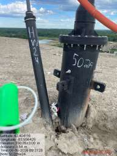
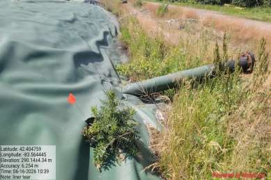
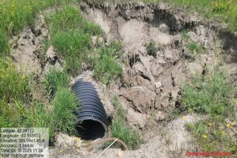
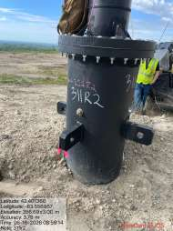
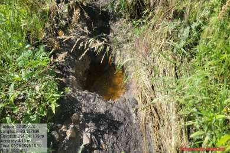
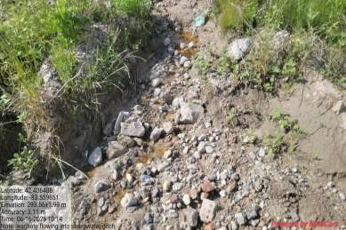
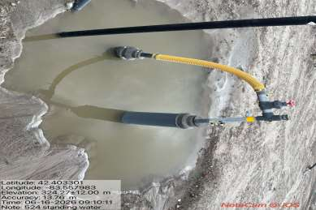
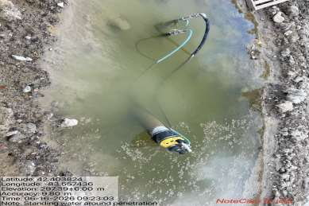
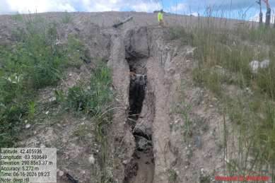
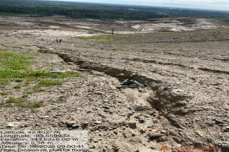

EGLE's Air Quality Division walked the Arbor Hills Landfill surface with methane detectors and recorded 75 areas above the action level, up to 148,682 ppm at one well.
On June 16, 2026, the Michigan Department of Environment, Great Lakes, and Energy (EGLE), Air Quality Division, conducted an announced surface emission monitoring (SEM) inspection of the Arbor Hills Landfill. Surface emission monitoring is a required walk of the landfill surface with a handheld methane detector, used to find places where gas is escaping through the cap; a reading at or above 500 ppm above background (that is, 500 ppm above the surrounding ambient methane level) counts as a recorded exceedance. During this inspection, EGLE found 75 areas with surface methane above 500 ppm, the highest being 148,682 ppm at well 502R.
What this is, and is not. Under the federal NESHAP rule (40 CFR 63.1958/63.1960), these are documented exceedances that start a corrective-action clock, not, by themselves, a declared violation. EGLE's letter is explicit: if the operator records each location and completes the required cover repair or vacuum adjustment, with re-monitoring within 10 days, "the exceedance is not a violation." It becomes a violation only if those corrective actions are not completed. The figures and photographs below are from EGLE's own results letter and inspection photo log; they are public records, presented here without alteration.



A penetration is the point where a pipe passes through the landfill cap, a common place for gas to escape. Four of the inspection's penetration photos are labeled by the operator with wells that EGLE separately designates as elevated-temperature "Wells of Interest" or their immediate buffer.

The inspection also noted liquid at the surface. Liquid pooling in and around the gas wells is one of the recognized signs of elevated landfill temperature, and EGLE's June 16 inspection letter reported that about half of the vertical wells showed signs of impairment — which the letter noted is above average for the landfills it inspects — with several surface-methane hits collocated with a flooded area of the well field. EGLE followed up on July 13, 2026, asking the operator for an update on the leachate observations. The operator responded on August 7 — about seven weeks after the inspection — reporting that it had investigated the four locations and attributed the darkened water to stormwater carrying finished compost, not leachate. No laboratory test of the liquid appears anywhere in the public record: whether it was leachate or stormwater was settled by the operator's own conclusion, not by a measured result — either the liquid was never tested, or any test has not been made public.




The landfill's cover (also called the cap) is the engineered layer of soil and liner placed over the buried waste, to keep rain out and hold the landfill gas in so it can be routed to the collection system. Erosion channels and tears in the cover are places where surface methane can escape.


These are 10 of the 94 photographs in the inspection's log; the reading locations were spread across the site, most concentrated near the active area and along the western ditches. A well-by-well geolocation of the full 94-photo log against EGLE's elevated-temperature roster is included in the folder below.
Why this is on the record: the site's live elevated-temperature data — the readings that make gas escape and liquid impairment an ongoing question — is in the thermal map and the wellfield explorer. Photographs of the site's 2022 subsurface event are on the 2022 event page.